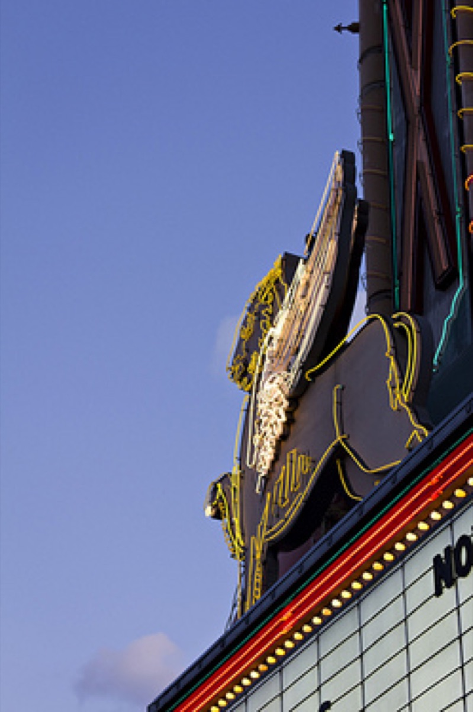
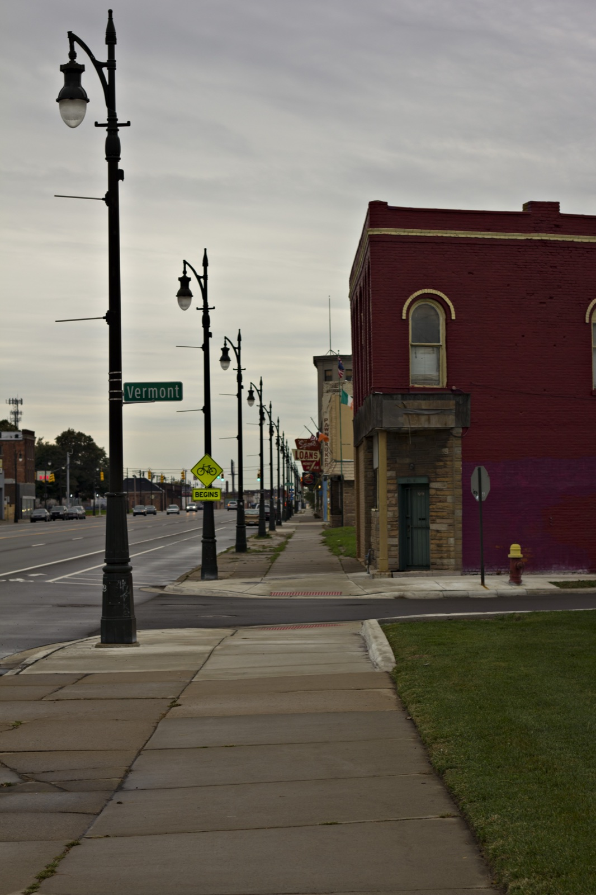
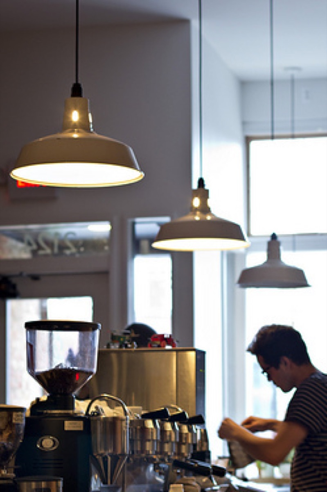

Detroit
On a foggy October morning two weeks ago, Nick and I left Chicago's Union Station aboard the Amtrak Wolverine line. The route is a beautiful one, beginning in industrial Indiana towns that give way to sand dunes and Michigan vacation spots. The train passes through Kalamazoo, Battle Creek, and Ann Arbor - arriving in Detroit by mid-afternoon.
Neither of us had visited Detroit before, though it had been on my list for years. For my birthday, Nick decided to plan a trip around the Smashing Pumpkins concert. It was a wonderful surprise and a very thoughtful gift.
After checking in at our hotel, we walked the two miles from downtown to our dinner destination in Midtown. On the way, we found Motor City Brewing Works which turned out to be far more exciting than our original destination. The place was full of friendly people, served good beer, and had fantastic pizza options (like roasted pear & fig). I would definitely be a regular if I lived in the area.
The first real concert I ever attended was the Smashing Pumpkins on their Mellon Collie and the Infinite Sadness tour. The Smashing Pumpkins were my favorite band and I was thrilled when my best friend Eileen invited me to attend. The show was at a huge arena near Chicago and it was a truly epic experience for a 13 year-old.

This concert took place at the Fillmore Detroit, a beautifully converted 1925 movie theater. The crowd was great and the show was appropriately epic for the moderately sized venue. Nick and I mused about the absence of solid mainstream rock and roll these days - and then felt kind of old.
I know my Detroit history fairly well and I have a number of acquaintances who have beautifully documented parts of it in pictures, but I wasn't really prepared for the incredible emptiness of the city. I had expected to find a small district of fully occupied downtown businesses surrounded by vacant properties, but activity was much more spread out and the vast majority of the buildings we passed were vacant - even in the more populated areas.
We arrived on a Saturday afternoon and the city was virtually empty until the evening when suburban residents drove downtown to parking garages to attend various cultural events. Only a handful of people patronized the few local businesses before or after the performances. Our visit was short and certainly not representative of the city at large, but the impressions were powerful.


The next morning we woke up early to watch part of the Detroit Free Press Marathon. It was a dreary day that looked perfect for a race. We made our way along the race route to Corktown to visit Astro Coffee (pictured above). This beautifully designed coffee shop just opened over the summer and already appears to have a strong following. We enjoyed coffee and excellent breakfast sandwiches on housemade bread. Another highly recommended spot.
It was a wonderful, yet brief trip. Detroit is a beautiful city and I think everyone should visit and support the amazing small businesses that are breathing new life into the area. I'm already looking forward to returning. There are a number of places that were recommended to us that we didn't have time to visit, including Belle Isle, Slows Bar BQ, the Motown Museum, Avalon Bakery, Woodbridge Pub, Cadieux Cafe, and Nancy Whiskey. (Thanks to Elizabeth and Will for all the excellent suggestions!) Anything else we should add to the list? Feel free to share your recommendations in the comments. You can find more photos from the trip here. I'll be back soon with a new recipe for you.